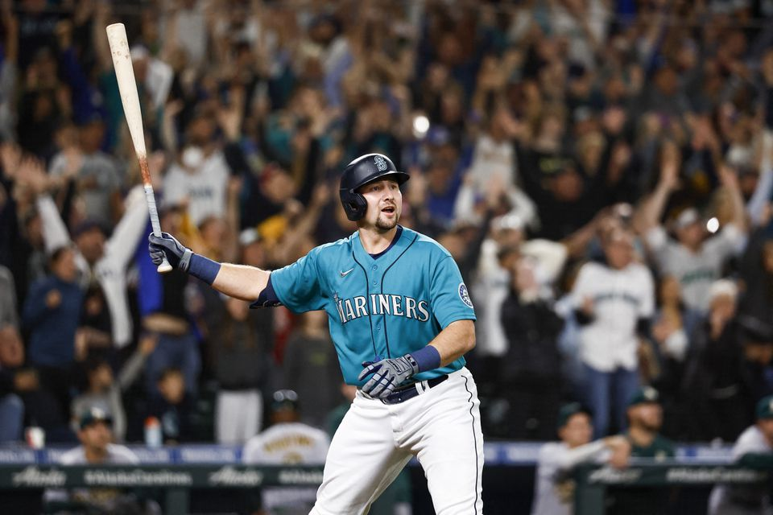
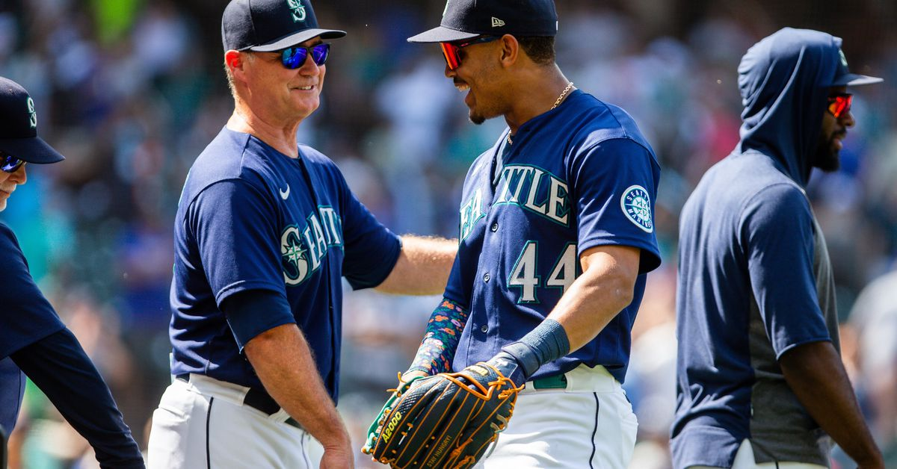

History
The Seattle Mariners were established in 1977 as an expansion team in Major League Baseball. They play their home games at T-Mobile Park in Seattle, Washington. The Mariners struggled for many years, but in 2022 the team finally snapped its playoff drought, making the playoffs for the first time since 2001. The Mariners have had many great players throughout their history, including Hall of Famers Ken Griffey Jr. and Edgar Martinez.
Roster
The current roster of the Seattle Mariners includes players such as Julio Rodríguez, Ty France, Luis Castillo, Teoscar Hernández, and Eugenio Suárez.
Video Highlights
Check out the latest highlights from the Seattle Mariners Here!